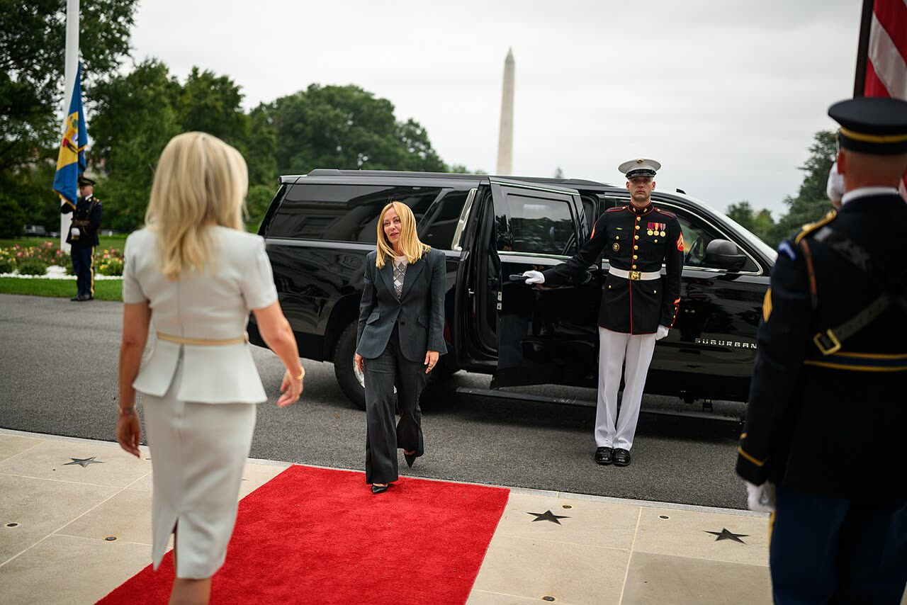

Trump prima di Abu Dhabi: l'Ucraina avrà «una forma un po' diversa»
Il posto al tavolo conta meno del conto: prima di firmare impegni che pagheremo noi, Roma dica cosa chiede su soldati, sanzioni, energia e ricostruzione.
Redazione Contrappunto · aggiornato il 09.11.2026

.jpg){kind=link}
La Russia ha invaso l'Ucraina nel febbraio 2022. Quest'anno gli Stati Uniti di Donald Trump hanno mediato colloqui tra delegazioni russe e ucraine ad Abu Dhabi e a Ginevra, fermi da febbraio. Riprendono ad Abu Dhabi martedì 10 e mercoledì 11 novembre. Il nodo resta il territorio: secondo The Moscow Times Putin chiede tutta la regione di Donetsk, in parte occupata, e Kiev rifiuta. Alla vigilia Trump, intervistato dalla tv americana CBS, ha detto che l'Ucraina finirà con «una forma un po' diversa», e il ministro degli Esteri francese ha annunciato che gli europei ci saranno. Il 5 novembre Giorgia Meloni aveva chiesto al presidente del Consiglio europeo, António Costa, che l'UE decida chi la rappresenta e con quale mandato. Ne abbiamo scritto il 3, il 4, il 6 e l'8 novembre; qui la domanda è un'altra: cosa chiede, e cosa paga, l'Italia.
Vedi di più: 13 parole spiegate, cosa si racconta
Cosa si raccontaLa versione diffusa è che l'Europa si siede al tavolo: lo titolano Politico, Euronews, France 24 e ANSA sull'annuncio di Barrot, e TASS lo riprende per Mosca. Reuters legge le parole di Trump come «confini modificati», e così le traducono Internazionale e Tgcom24. Sulla lettera di Meloni le letture si dividono: per La Notizia è un'esclusa a cui Bruxelles «risponde picche», per le agenzie e il Foglio una richiesta che Costa accoglie. Il Kyiv Independent mette al centro Trump che si prende il merito della pace; il Cremlino parla di formato a tre. [Politico Europe] [Euronews] [France 24 / AFP] [ANSA] [TASS] [Reuters via Internazionale] [Tgcom24] [La Notizia] [Il Foglio] [The Kyiv Independent] [Interfax-Ukraine]
- 60 Minutes
- Il programma d'inchiesta della domenica della tv americana CBS. Questa volta a intervistare Trump è Ross Douthat; è la sua prima intervista dopo le elezioni di metà mandato del 3 novembre, in cui i democratici hanno preso Camera e Senato.
- Abu Dhabi
- La capitale degli Emirati Arabi Uniti, che ospitano i colloqui. Qui le delegazioni si sono già viste prima della pausa di febbraio; un altro incontro c'è stato a Ginevra.
- Colloqui a tre (trilaterali)
- Incontri tra delegazioni di Russia e Ucraina con gli Stati Uniti come mediatori. Non sono incontri tra capi di Stato: Zelensky e Putin non si vedono.
- Steve Witkoff e Jared Kushner
- Gli inviati di Trump per la guerra in Ucraina. Witkoff è l'inviato speciale; Kushner è il genero del presidente.
- Vladimir Medinsky
- Consigliere di Putin, guida la delegazione russa in tutti i round.
- Licenza generale 135 (OFAC)
- L'OFAC è l'ufficio del Tesoro americano che gestisce le sanzioni. Una licenza generale autorizza operazioni che le sanzioni vieterebbero: la 135 lo fa per il diesel russo, fino al 7 aprile 2027.
- Consiglio europeo e António Costa
- Il Consiglio europeo riunisce i capi di Stato e di governo dei 27 paesi dell'UE; António Costa lo presiede. Il 12 e 13 novembre i leader si vedono a Dublino, in una riunione informale; il vertice formale è a dicembre.
- E3
- Il gruppo di Francia, Germania e Regno Unito, che spesso tratta per conto degli europei sulle crisi internazionali. L'Italia non ne fa parte.
- Kaja Kallas
- L'Alta rappresentante dell'UE per la politica estera, cioè la responsabile della diplomazia europea. Si è detta d'accordo con Meloni (LaPresse).
- Coalizione dei Volenterosi
- I 37 Stati che preparano il sostegno militare all'Ucraina per il dopoguerra (LaPresse). Si riuniscono a Berlino il 19 novembre (lettera di Meloni).
- Copasir e decreto aiuti
- Il Copasir è il Comitato parlamentare per la sicurezza della Repubblica, che vigila sui servizi segreti. Il decreto aiuti è la norma con cui il governo autorizza gli aiuti all'Ucraina: Crosetto vuole prolungarlo (ANSA).
- TASS
- L'agenzia di stampa di Stato russa: la usiamo per la voce di Mosca. RT e Sputnik, sotto sanzioni UE, non le citiamo.
- Sanzioni ed energia
- Le sanzioni occidentali colpiscono anche petrolio e diesel russi. Per noi contano perché l'Italia compra energia sul mercato e i prezzi li paghiamo in bolletta e alla pompa: è la nostra lettura, l'effetto sui prezzi di oggi non l'abbiamo misurato in questo pezzo.
- A 60 Minutes Trump ha detto che la guerra finirà presto, grazie a lui, e che l'Ucraina avrà «una forma un po' diversa». Di confini non ha parlato.
- Martedì e mercoledì americani, russi e ucraini trattano ad Abu Dhabi; sugli europei al tavolo le versioni divergono.
- Meloni chiede all'UE di decidere entro dicembre chi tratta e con quale mandato.
Il coro regge a metà. Politico, Euronews, France 24 e ANSA titolano che l'Europa sarà ad Abu Dhabi; Reuters legge in Trump «confini modificati». Nella trascrizione CBS la frase è più vaga: «they're gonna end up with a little bit different shape Ukraine». Di confini non parla. Il posto al tavolo lo promette solo Parigi: il Cremlino dice formato a tre, Kushner consultazioni «on the sidelines». Repubblica, il Giornale e il Fatto non sono usciti nelle nostre ricerche. [4] [28] [9] [21] [2] [1] [10]
Trump dice anche che nessuno è stato più duro di lui con Mosca e che non ha tolto le sanzioni sul diesel. Il documento del Tesoro dice altro: la licenza 135 lascia passare il diesel russo fino al 7 aprile 2027. E i 350 miliardi che Biden avrebbe dato a Kiev non hanno una fonte: le stime documentate vanno da 65,9 a 183 miliardi di dollari, a seconda di cosa si conta. [1] [13] [15]
La domanda giusta però non è chi siede al tavolo. È cosa paga l'Italia. Trump lo dice chiaro: le armi per Kiev le vende all'Europa «at full price», perché «Europe has money». Quanto spendiamo noi? Cifre ufficiali 2026 non le abbiamo trovate. Sappiamo che a Bruxelles, su garanzie e ricostruzione, l'Italia non c'era, e che Crosetto vuole prolungare il decreto aiuti. [1] [20] [4]
Meloni ha scritto a Costa che non accetta impegni negoziati da altri «in assenza di un mandato». Giusto: chi paga decide prima. Ma dichiariamo una tensione: Contrappunto, per linea, vuole meno Europa, e «una voce sola» vuol dire più Bruxelles. La risolviamo così: il mandato lo scrivano i governi nel Consiglio europeo, con condizioni precise, senza deleghe in bianco alla Commissione. [16]
Quindi? Prima di Dublino Roma metta per iscritto cosa chiede. Soldati: nelle fonti lette il governo non ne parla, e nessuno parta senza un voto del Parlamento. Sanzioni ed energia nel negoziato: Washington il diesel russo lo fa già passare, e a chi compra energia conviene che i prezzi scendano. Ricostruzione: imprese italiane in proporzione a quanto abbiamo dato. Se Abu Dhabi avvicina un cessate il fuoco senza europei al tavolo, meglio quello che la foto. [13] [21]
La verifica punto per punto17 passaggi, 29 fonti
Qui sotto ogni cosa scritta sopra, una per una, con le fonti. Confermato: lo dice un documento originale o più fonti lette. Plausibile: lo riportano fonti serie, ma non abbiamo letto l'originale. Discordante: le fonti danno numeri diversi, e diciamo quali. Ipotesi e Opinione sono il nostro ragionamento, separato dai fatti.
Cosa ha detto Trump
Nell'intervista a 60 Minutes con Ross Douthat, in onda domenica 8 novembre (ora di New York), Trump dice che la guerra finirà presto e solo grazie a lui, che l'ostacolo è stato l'odio tra Zelensky e Putin e che Putin non lo sta prendendo in giro. Douthat gli chiede se si aspetta un'Ucraina libera e indipendente; lui risponde: «they're gonna end up with a little bit different shape Ukraine». Sbaglia le date di Abu Dhabi: colloca i colloqui da sabato a martedì, sono martedì e mercoledì.
«Confini modificati» è una lettura di Reuters, non una parola di Trump. Il Kyiv Independent ripulisce la frase («going to» al posto di «gonna») e aggiunge un «[for]» senza dirlo.
Abu Dhabi: chi siede al tavolo
Il 2 novembre l'inviato americano Steve Witkoff ha annunciato colloqui a tre il 10 e 11 novembre ad Abu Dhabi, i primi da febbraio; il Cremlino ha confermato. Mosca manda Vladimir Medinsky con i viceministri Sergei Ryabkov (per la prima volta) e Mikhail Galuzin, Igor Kostyukov (intelligence militare) e Yury Zhigarlovsky (Stato maggiore). Kiev manda Rustem Umerov, Kyrylo Budanov e David Arakhamia; Washington Witkoff e Jared Kushner (Marco Rubio).
Gli europei ci saranno? Il ministro francese Jean-Noël Barrot, a RTL l'8 novembre, dice di sì ma non sa chi rappresenterà la Francia: l'originale francese non c'è, TASS mette «including France» tra le virgolette. Kushner parla di consultazioni con gli europei «on the sidelines», e di una loro partecipazione diretta solo con dei progressi. Il Cremlino, il 23 ottobre: formato a tre. Si saprà solo ai colloqui.
Giovedì 5 novembre Trump ha detto che l'accordo «potrebbe coinvolgere tutta l'Europa»; per Rubio alludeva ai progressi sulla sicurezza postbellica di Ucraina ed Europa. Kushner elenca cinque obiettivi: consultazioni permanenti sulla sicurezza, comunicazione per le crisi, trasparenza militare, riduzione dei rischi di escalation, stabilità europea. Il Cremlino dice di non aver ricevuto proposte europee sulle garanzie: «Non ci è arrivato nulla e non siamo al corrente di nulla».
Il nodo è il territorio: Putin chiede che Kiev ceda tutta la regione di Donetsk, in parte occupata, come condizione per un cessate il fuoco, e Kiev rifiuta. (The Moscow Times).
Duro con Mosca? Il documento
Trump dice che nessuno è stato più duro di lui con la Russia e che non ha tolto le sanzioni sul diesel. La licenza generale 135 del Tesoro americano, del 9 ottobre, autorizza «all transactions» vietate dalle sanzioni e legate a vendita, consegna e importazione di diesel russo fino al 7 aprile 2027. Sanzioni sulla carta, diesel che passa.
Chi paga
Trump dice che Biden ha dato a Kiev 350 miliardi di dollari «worth of cash and weapons»: la cifra la usava già nel 2025 e per Full Fact non si sa su cosa si basi. Le stime documentate vanno da 65,9 a 183 miliardi e misurano cose diverse: aiuti militari, fondi allocati, stanziati dal Congresso, o resi disponibili anche per spese negli USA.
Nella stessa intervista Trump spiega che le armi per Kiev oggi le vende all'Europa: «I give it to Europe, sell it at full price, and they pay us». E aggiunge: «Europe has money».
Quanto paga l'Italia non si sa: cifre ufficiali 2026 su aiuti, armi e garanzie non le abbiamo trovate. I democratici, padroni del Congresso, preparano un pacchetto da 15 miliardi per Kiev. Alle esercitazioni dei Volenterosi (2.800 soldati, fino al 22 novembre) l'Italia non è tra i paesi elencati. Sui soldati, niente dichiarazioni recenti lette (Tajani e Crosetto ne parlarono nel 2024-25).
Roma e Bruxelles
Il 5 novembre Giorgia Meloni scrive al presidente del Consiglio europeo António Costa: l'Europa deve «parlare con una voce sola»; l'Italia non accetta che «si negozino, in assenza di un mandato, impegni» che dovrà assumere anche lei; e lei non chiede un ruolo per sé. Vuole che se ne parli a Dublino e che il Consiglio di dicembre decida. Costa risponde la sera stessa che è d'accordo e che dedicherà tempo alla discussione. Testo identico in quattro testate; su governo.it non c'è.
Il 4 e 5 novembre, a Bruxelles, americani, ucraini, NATO e i paesi dell'E3 hanno parlato di garanzie di sicurezza e ricostruzione, con Commissione e Banca mondiale: l'Italia non è nell'elenco. Kushner le ha definite discussioni «productive and substantive».
Il 5 novembre il ministro della Difesa Guido Crosetto annuncia che il nuovo pacchetto di aiuti a Kiev passerà dal Copasir e propone di prolungare il decreto aiuti anche per il prossimo anno: «il governo manterrà la linea che ha seguito in questi 4 anni». Lo riporta solo ANSA.
Come l'hanno raccontata
Quattro errori. DW sposta a venerdì il «big, beautiful agreement» detto giovedì, dopo l'incontro con Kirill Dmitriev. Tgcom24 mette in bocca a Trump «dato che è stata la Russia a invadere l'Ucraina»: è la domanda di Douthat. Open scrive «dello scorso 19 novembre» di una riunione futura. La Notizia titola che Bruxelles «risponde picche»: Costa si dice d'accordo.
Tra le righe
Al primo giro gli europei saranno consultati a margine, non seduti al tavolo.
Ragionamento: Il Cremlino parla di formato a tre; Kushner promette la partecipazione diretta solo dopo dei progressi; Barrot non sa chi andrà. Kiev vuole gli europei nel negoziato, la Russia non li vuole al tavolo (France 24).
Ad Abu Dhabi non si chiude sul territorio: al massimo intese tecniche su sicurezza, de-escalation e questioni umanitarie.
Ragionamento: Witkoff parla di negoziati «working-level»; Rubio dice che non è stato definito ancora niente; secondo The Moscow Times Putin chiede tutto il Donetsk e Zelensky non cede territorio.
Il nostro punto
Meloni ha ragione a pretendere un mandato, torto a fermarsi lì. L'Italia scriva le sue condizioni su soldati, sanzioni, energia e ricostruzione. Un passo verso il cessate il fuoco vale più di una sedia.
Fonti29, tutte con il link
- Read the full transcript of Ross Douthat's interview with President Trump (60 Minutes, 8 novembre) (CBS News) · consultata il 09.11.2026
- Europeans will join Ukraine talks in Abu Dhabi, French minister says (Reuters, 8 novembre, con traduzione DeepL) (Reuters via Internazionale) · consultata il 09.11.2026
- Ukraine will likely 'end up with a little bit different shape' after war, Trump tells 60 Minutes (9 novembre) (The Kyiv Independent) · consultata il 09.11.2026
- Europe will be represented in Abu Dhabi talks on Ukraine, French foreign minister says (8 novembre) (Politico Europe) · consultata il 09.11.2026
- Europe to be represented at Abu Dhabi talks on Ukraine — top French diplomat (8 novembre) (TASS) · consultata il 09.11.2026
- U.S.-Mediated Ukraine Peace Talks to Resume in Abu Dhabi Next Week (3 novembre) (The Moscow Times) · consultata il 09.11.2026
- Russia hits Kyiv with airstrikes ahead of trilateral talks (7 novembre) (Deutsche Welle) · consultata il 09.11.2026
- US will mediate upcoming Ukraine-Russia talks in Abu Dhabi, Witkoff says (2 novembre) (Fox News) · consultata il 09.11.2026
- Europe will take part in US-mediated Ukraine talks in Abu Dhabi, French FM says (8 novembre) (France 24 / AFP) · consultata il 09.11.2026
- Kremlin says trilateral negotiations planned for November in Abu Dhabi (23 ottobre) (Interfax-Ukraine) · consultata il 09.11.2026
- Russia to send senior diplomats, military officials to upcoming peace talks in Abu Dhabi (7 novembre) (The Kyiv Independent (da Reuters)) · consultata il 09.11.2026
- Russia Dispatches Higher-Level Delegation to Abu Dhabi Peace Talks (8 novembre) (Kyiv Post) · consultata il 09.11.2026
- General License No. 135: diesel di origine russa (9 ottobre 2026) (OFAC, Dipartimento del Tesoro USA) · consultata il 09.11.2026
- US Lifts Sanctions on Russian Diesel for Six Months After Trump-Putin Call (ottobre) (Ship & Bunker) · consultata il 09.11.2026
- How much aid has the US given to Ukraine? (21 febbraio 2025) (Full Fact) · consultata il 09.11.2026
- Ucraina, Meloni al presidente Costa: "Italia non disposta ad accettare impegni senza mandato Ue" (5 novembre, testo della lettera e risposta di Costa) (LaPresse) · consultata il 09.11.2026
- Ucraina, Meloni scrive a Costa: "Ue deve parlare con una sola voce" (5 novembre, testo integrale) (Adnkronos (via redazionenews.it)) · consultata il 09.11.2026
- Meloni: improcrastinabile che Europa parli a una voce sola su Kiev (5 novembre) (Avvenire) · consultata il 09.11.2026
- Meloni scrive ad Antonio Costa: "Sull'Ucraina l'Europa parli con una voce sola" (5 novembre) (Il Foglio) · consultata il 09.11.2026
- Meloni a Costa: 'Su Kiev una voce sola'. Lui apre con prudenza: 'Ne parleremo' (5 novembre) (ANSA) · consultata il 09.11.2026
- Ucraina: Europei e Francia al trilaterale di Abu Dhabi, ma i Volenterosi si esercitano (8 novembre) (ANSA) · consultata il 09.11.2026
- Meloni scrive a Costa, la strigliata all'Ue sui negoziati per Kiev (5 novembre) (Open) · consultata il 09.11.2026
- Meloni esclusa dai negoziati sull'Ucraina scrive a Bruxelles che risponde picche (6 novembre) (La Notizia) · consultata il 09.11.2026
- EU's Costa backs Meloni's criticism of peace talks 'disarray,' plans to fix it (6 novembre) (The Kyiv Independent) · consultata il 09.11.2026
- Guerra in Ucraina, Trump alla vigilia del trilaterale: "Accordo vicino per merito mio" (9 novembre) (Tgcom24) · consultata il 09.11.2026
- Ucraina, Trump annuncia il colpo di scena: "Accordo con la Russia e tutta l'Europa" (6 novembre) (Adnkronos) · consultata il 09.11.2026
- Ucraina-Russia, Trump accelera ma Mosca chiama l'Europa: "Parliamo" (26 ottobre) (Adnkronos) · consultata il 09.11.2026
- Europeans to join Russia-Ukraine talks in Abu Dhabi, says France (8 novembre) (Euronews) · consultata il 09.11.2026
- Democrats win full control of Congress, ushering in a new era of divided government (NPR via KUT, dati AP, 4 novembre) (KUT (NPR)) · consultata il 09.11.2026
Testo preparato con strumenti di intelligenza artificiale e pubblicato senza revisione umana. Come lavoriamo